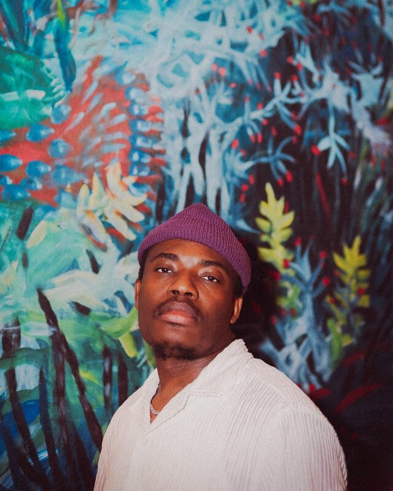

Elvic Kongolo
Founder & CEO | Cultural Entrepreneur | Music Producer
I'm a social entrepreneur bridging culture, tourism, and community development across Norway and DR Congo. Since 2017, I've founded four ventures delivering cultural experiences to 500+ participants across Northern Norway.
What I Do:
- Kulturbryggeriet & Nord på Hjul (Founded 2022) - Mobile roller-skating disco events across 8 municipalities in Northern Norway, engaging 500+ participants through 20+ events.
- Elvic Gruppen AS (Founded 2024) - Hospitality and tourism development supporting regional economic growth in Northern Norway.
- Elvic Adventures (Founded 2024) - Water biking and outdoor tourism experiences making Northern Norway's nature accessible to all.
- Musikkbryggeriet (Founded 2017) - Music industry development program connecting emerging artists with professionals through events, workshops, and mentorship.
Background: Performed at Moldejazz, Slottsfjell, Mela festivals and 2016 Youth Olympics. Featured in 32+ publications. Read my full story →
